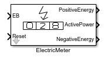
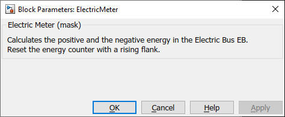

ElectricMeter
Path: CARNOT/Control
Purpose
The block integrated
electric power in the EB to a positive and negative energy.
Description
The block shows the power [W],
positive and
negative energy [J]
Negative energy is typically counted as energy from the grid, positive energy as
energy created in the system (and eventually fed to the grid).
The Reset input resets
the energy counter to zero with a rising flank.
Inputs:
Outputs:
Parameters and Dialog Box

Characteristics
Direct Feedthrough Yes
Sample
time
Inherited
from driving block
Vectorized
No